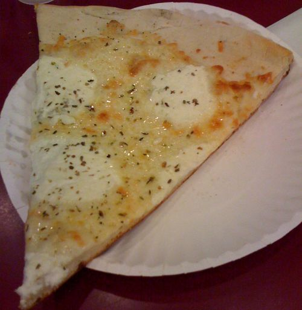

White Pizza

This delicious white pizza is drizzled with olive oil, garlic, and white cheese. It may not be authentic, but it sure is delicious.
Ingredients:
- Dough
- 2 TBSP Olive Oil
- 3 Garlic Cloves (minced)
- 8 oz Fresh Mozzerella ball (sliced thinly)
- 1/3 CUP Ricotta Cheese
- 1/2 TSP Kosher Salt
- 1/4 TSP Ground Black Pepper
- 1/8 TSP Dried Oregano
- 1/8 TSP Dried Thyme
- 1/3 CUP grated Pecorino Romano OR Parmesan Cheese
Steps:
- Take pizza dough and stretch to desired size. Prebake in the oven at 425 degrees F for 5 minutes
- Remove from oven and brush with olive oil and minced garlic
- In a small bowl, mix together ricotta, salt, pepper, and herbs. Spread mixture into a thin layer across the pizza. Layer with thin slices of fresh mozzarella, and half the pecorino cheese
- Bake at 425 degrees F for 10-15 minutes, until cheese is melted and bubbly
- Remove from oven and sprinkle with remaining pecorino and crushed red pepper flakes, if desired